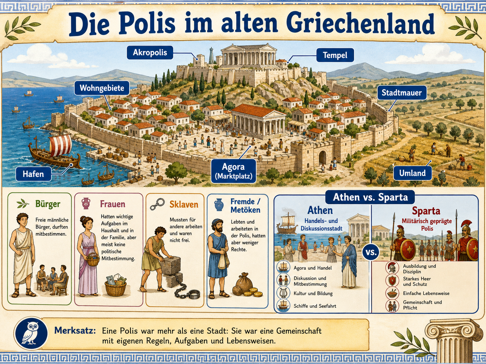
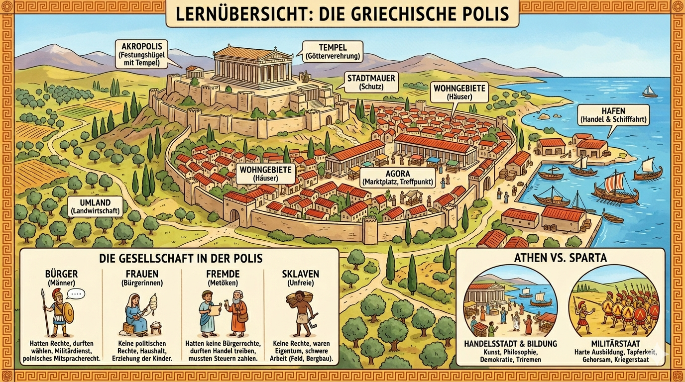

Eine Polis war mehr als eine Stadt. Sie war Wohnort, Schutzraum, Markt,
religioeses Zentrum und politische Gemeinschaft. In diesem Modul lernst du
den Aufbau einer Polis, die ungleichen Rechte ihrer Bewohner und den
Unterschied zwischen Athen und Sparta.

Die Uebersicht zeigt den roten Faden: Stadtaufbau, Gesellschaft und Athen-Sparta-Vergleich gehoeren zusammen.
Lernidee: Drei Fragen an jede Polis
Wenn du eine Polis erklaeren sollst, hilft ein fester Dreischritt.
Er verhindert, dass man nur Gebaeude aufzaehlt oder nur Athen und Sparta
durcheinanderwirft.
1. Wo spielt das Leben?
Akropolis, Agora, Wohngebiete, Stadtmauer, Hafen und Umland bilden den Raum der Polis.
2. Wer gehoert dazu?
Buerger, Frauen, Fremde und Sklaven lebten in der Polis, hatten aber sehr unterschiedliche Rechte.
3. Wie war die Polis gepraegt?
Athen und Sparta zeigen, dass Poleis sehr verschieden sein konnten.
Stadtaufbau verstehen
Eine Polis bestand aus einer Stadt und ihrem Umland. Die Grafik zeigt typische
Bestandteile. Klicke auf einen Bereich, um seine Funktion zu verstehen.

Wer durfte mitbestimmen?
In der Polis lebten viele Menschen, aber politische Rechte waren ungleich verteilt.
Besonders wichtig: "Bewohner" bedeutet nicht automatisch "Buerger".
Buerger
Freie maennliche Buerger durften je nach Polis politisch mitbestimmen und hatten Rechte und Pflichten.
Frauen
Frauen hatten wichtige Aufgaben in Familie, Haushalt und Religion, aber keine politische Mitbestimmung.
Fremde / Metoeken
Sie konnten handeln und arbeiten, hatten aber weniger Rechte als Buerger.
Sklaven
Sie waren unfrei, mussten fuer andere arbeiten und hatten keine politischen Rechte.
Athen und Sparta vergleichen
Beide waren griechische Poleis, aber ihre Lebensweise war unterschiedlich.
Athen steht im Unterricht oft fuer Handel, Diskussion, Bildung und Demokratie.
Sparta steht fuer militaerische Erziehung, Disziplin, Pflicht und Kriegsbereitschaft.
Athen
Handels- und Hafenstadt
Agora, Diskussion und Mitbestimmung
Kultur, Bildung, Theater und Philosophie
Flotte und Seefahrt wichtig
Sparta
militaerisch gepraegte Polis
harte Ausbildung und Disziplin
starkes Heer und Schutz
Gemeinschaft und Pflicht wichtiger als Luxus
Merksatz fuer die Klassenarbeit
Eine Polis war eine griechische Stadt mit Umland, eigenen Regeln und einer
Gemeinschaft. Aber nicht alle Bewohner hatten dieselben Rechte.
Training A: Stadtteile und Aufgaben
Ordne jedem Teil der Polis die passende Funktion zu.
Training B: Rechte in der Polis
Entscheide, zu welcher Gruppe die Aussage passt.
Training C: Athen oder Sparta?
Ordne die Merkmale der passenden Polis zu.
Geschichts-Test
10 Fragen zu Aufbau, Gesellschaft und Athen-Sparta-Vergleich.